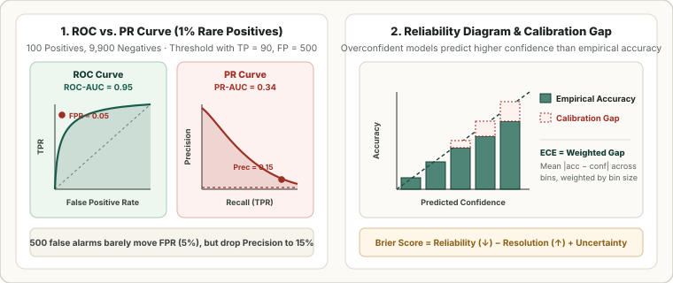

Ranking & Calibration Metrics: ROC-AUC, PR-AUC, Log-Loss, Brier Decomposition, and ECE
Separate two questions that thresholded metrics conflate: (1) Discrimination—does the model rank positive examples above negative examples across all thresholds?—and (2) Calibration—do the predicted probabilities $\hat p(x)$ match true empirical frequencies?
In Chapter 01, every metric depended on choosing a specific decision threshold $\tau$. What if we want to evaluate the raw score distribution $\hat s(x)$ across all possible thresholds simultaneously—or verify whether $\hat p(x) = 0.85$ genuinely means an $85\%$ chance of occurrence? That brings us to ROC-AUC, PR-AUC, Proper Scoring Rules (Log-Loss and Brier Score), and Expected Calibration Error (ECE).
1. ROC-AUC and the Exact Wilcoxon–Mann–Whitney Proof
As we sweep the decision threshold $\tau$ from $+\infty$ down to $-\infty$, the pair $\big(\operatorname{FPR}(\tau),\, \operatorname{TPR}(\tau)\big)$ traces the Receiver Operating Characteristic (ROC) curve from $(0, 0)$ to $(1, 1)$. Let $F_1(\tau) = \Pr(\hat s_+ \le \tau)$ and $F_0(\tau) = \Pr(\hat s_- \le \tau)$ denote the cumulative distribution functions of the model’s score on true positives ($\hat s_+$) and true negatives ($\hat s_-$), with densities $f_1(\tau), f_0(\tau)$. Then $\operatorname{TPR}(\tau) = 1 - F_1(\tau)$ and $\operatorname{FPR}(\tau) = 1 - F_0(\tau)$, so $d\operatorname{FPR} = -f_0(\tau)\,d\tau$. Integrating the area under the ROC curve gives:
This remarkable identity is the Wilcoxon–Mann–Whitney $U$-statistic theorem: $\operatorname{ROC-AUC}$ is the exact probability that a randomly drawn positive sample receives a higher score than a randomly drawn negative sample (with ties counted as $\frac{1}{2}$):
Two closely related banking/credit-risk metrics follow immediately from the ROC curve: the Somers’ $D$ / Gini Coefficient $G = 2\cdot\operatorname{ROC-AUC} - 1 \in [-1, 1]$, and the Kolmogorov–Smirnov ($KS$) Statistic $KS = \max_\tau |\operatorname{TPR}(\tau) - \operatorname{FPR}(\tau)|$, which measures the maximum vertical separation between the ROC curve and the chance diagonal.

2. Precision–Recall AUC (PR-AUC / Average Precision) vs. ROC-AUC
Because $\operatorname{TPR}$ and $\operatorname{FPR}$ are both row-conditioned on the true class, $\operatorname{ROC-AUC}$ is completely invariant to class prevalence $\pi$. While useful when evaluating intrinsic rank separability across balanced cohorts, this invariance becomes a trap when $\pi \ll 1$ (e.g., fraud, click prediction, medical screening, or information retrieval):
- Suppose a dataset has $P = 100$ positives and $N = 9{,}900$ negatives ($\pi = 1\%$). At threshold $\tau$, the model catches $TP = 90$ positives ($\operatorname{Recall} = 0.90$) but also triggers $FP = 500$ false alarms.
- On the ROC curve, $\operatorname{FPR} = \frac{500}{9{,}900} = 0.0505$, placing the operating point near the ideal top-left corner $(0.05, 0.90)$ with $\operatorname{ROC-AUC} \approx 0.95$.
- On the Precision–Recall (PR) curve, $\operatorname{Precision} = \frac{90}{90 + 500} = 0.1525$—meaning $85\%$ of all positive alerts are false alarms! Furthermore, a random classifier has baseline $\operatorname{ROC-AUC} = 0.50$, whereas its baseline on the PR curve is the positive prevalence $\pi = 0.01$.
Average Precision (AP / PR-AUC) integrates Precision against Recall across all $K$ sorted thresholds $k = 1,\dots,K$ using step-wise right-Riemann integration:
Why you must never use linear trapezoidal interpolation on a PR curve (Davis & Goadrich, ICML 2006): In ROC space, interpolating linearly between two points $(FP_A, TP_A)$ and $(FP_B, TP_B)$ corresponds to a valid stochastic mixture of thresholds. In PR space, as $TP$ increases by $x$ and $FP$ increases by $\frac{FP_B-FP_A}{TP_B-TP_A}x$, Precision $\frac{TP_A + x}{TP_A + x + FP_A + c\,x}$ is a hyperbolic (non-linear) curve, so naive trapezoidal interpolation $\frac{P_A + P_B}{2}$ artificially overestimates PR-AUC!
3. Strictly Proper Scoring Rules: Log-Loss and Brier Score Decomposition
Both ROC-AUC and PR-AUC depend only on the ordinal ranking of scores $\hat s_i$: multiplying all predicted probabilities by $0.01$ or passing them through $x^3$ leaves ROC-AUC and PR-AUC $100\%$ unchanged! To evaluate whether predicted probabilities $\hat p_i \in [0, 1]$ are truthful, we need a strictly proper scoring rule—a loss $\mathcal S(\hat p, y)$ whose expected value under true conditional probability $q = \Pr(Y=1\mid x)$ is uniquely minimized at $\hat p = q$:
- Binary Log-Loss (Cross-Entropy / Ignorance Score):
$$\operatorname{LogLoss} = -\frac{1}{N}\sum_{i=1}^N \Big(y_i\ln\hat p_i + (1 - y_i)\ln(1 - \hat p_i)\Big).$$Taking the derivative of expected log-loss $-\big(q\ln\hat p + (1-q)\ln(1-\hat p)\big)$ with respect to $\hat p$ gives $-\frac{q}{\hat p} + \frac{1-q}{1-\hat p} = 0 \iff \hat p = q$. Log-loss heavily penalizes confident wrong predictions ($\hat p \to 0$ when $y=1$ sends $-\ln\hat p \to +\infty$).
- Brier Score (Quadratic Scoring Rule, Brier 1950):
$$\operatorname{BS} = \frac{1}{N}\sum_{i=1}^N (\hat p_i - y_i)^2 \in [0, 1].$$Partitioning predictions into $M$ probability bins $B_1,\dots,B_M$ of size $N_m$, average predicted confidence $\bar p_m = \frac{1}{N_m}\sum_{i\in B_m}\hat p_i$, empirical bin accuracy $\bar y_m = \frac{1}{N_m}\sum_{i\in B_m} y_i$, and overall base rate $\bar y = \frac{1}{N}\sum_{i=1}^N y_i = \pi$, Murphy (1973) proved the exact 3-way algebraic decomposition:$$\operatorname{BS} = \underbrace{\frac{1}{N}\sum_{m=1}^M N_m (\bar p_m - \bar y_m)^2}_{\text{Reliability (Calibration Error }\downarrow\text{)}} - \underbrace{\frac{1}{N}\sum_{m=1}^M N_m (\bar y_m - \bar y)^2}_{\text{Resolution (Sharpness }\uparrow\text{)}} + \underbrace{\bar y(1 - \bar y)}_{\text{Uncertainty (Base-Rate Entropy)}}.$$A well-calibrated constant predictor $\hat p_i \equiv \pi$ has $\text{Reliability} = 0$ (perfectly calibrated!) but $\text{Resolution} = 0$ (zero discrimination!). A great model minimizes Reliability toward $0$ while maximizing Resolution toward $\bar y(1-\bar y)$.
4. Expected Calibration Error (ECE), MCE, and Temperature Scaling
Modern deep neural networks (Guo et al., ICML 2017) often achieve higher accuracy while becoming severely miscalibrated (overconfident) because continuing to minimize cross-entropy on nearly-zero training error drives logit magnitudes $\|z\|_2 \to \infty$. A model is perfectly calibrated if, among all samples assigned confidence $\hat p$, the fraction that are actually correct equals $\hat p$:
Partitioning $[0, 1]$ into $M$ equal-width bins $B_m = \left(\frac{m-1}{M}, \frac{m}{M}\right]$ (or equal-mass bins in Adaptive ECE / ACE), with bin accuracy $\operatorname{acc}(B_m) = \frac{1}{|B_m|}\sum_{i\in B_m}\mathbf 1[\hat y_i = y_i]$ and average confidence $\operatorname{conf}(B_m) = \frac{1}{|B_m|}\sum_{i\in B_m}\hat p_i$, we define Expected Calibration Error (ECE) and Maximum Calibration Error (MCE):
Post-hoc fix — Temperature Scaling: Dividing the pre-softmax logits $z \in \mathbb R^C$ by a single scalar $T > 0$ optimized via NLL on a held-out validation set ($\hat p = \operatorname{softmax}(z / T)$) softens overconfident probabilities ($T > 1$) while preserving the argmax class $\arg\max_c (z_c / T) = \arg\max_c z_c$, so Accuracy, ROC-AUC, and PR-AUC remain $100\%$ unchanged while ECE drops dramatically!
5. Compute ROC-AUC (Wilcoxon), Average Precision, Brier, and ECE in PyTorch
import torch
def roc_auc_mann_whitney(y_true: torch.Tensor, y_score: torch.Tensor) -> float:
"""Exact Wilcoxon-Mann-Whitney pairwise probability Pr(s_+ > s_-)."""
pos = y_score[y_true == 1].unsqueeze(1) # (P, 1)
neg = y_score[y_true == 0].unsqueeze(0) # (1, N)
greater = (pos > neg).float()
ties = 0.5 * (pos == neg).float()
return (greater + ties).mean().item()
def average_precision(y_true: torch.Tensor, y_score: torch.Tensor) -> float:
"""Exact step-wise Average Precision (PR-AUC without linear interpolation bias)."""
order = torch.argsort(y_score, descending=True)
y_sorted = y_true[order].float()
tp_cum = torch.cumsum(y_sorted, dim=0)
ranks = torch.arange(1, len(y_sorted) + 1, dtype=torch.float32)
precisions = tp_cum / ranks
return (precisions * y_sorted).sum().div(y_true.sum().clamp(min=1)).item()
def expected_calibration_error(y_true: torch.Tensor, y_prob: torch.Tensor, num_bins: int = 10):
"""Compute ECE, MCE, and Brier Score for binary probabilities."""
brier = ((y_prob - y_true.float()) ** 2).mean().item()
boundaries = torch.linspace(0.0, 1.0, num_bins + 1)
ece, mce, n = 0.0, 0.0, len(y_true)
for m in range(num_bins):
mask = (y_prob > boundaries[m]) & (y_prob <= boundaries[m + 1]) if m > 0 else (y_prob >= 0.0) & (y_prob <= boundaries[1])
if mask.any():
acc = y_true[mask].float().mean().item()
conf = y_prob[mask].mean().item()
gap = abs(acc - conf)
ece += (mask.sum().item() / n) * gap
mce = max(mce, gap)
return {"ROC-AUC": round(roc_auc_mann_whitney(y_true, y_prob), 4),
"PR-AUC": round(average_precision(y_true, y_prob), 4),
"Brier": round(brier, 4), "ECE": round(ece, 4), "MCE": round(mce, 4)}
y = torch.tensor([1, 1, 1, 0, 0, 0, 0, 0, 0, 0])
p = torch.tensor([0.95, 0.85, 0.40, 0.80, 0.30, 0.20, 0.15, 0.10, 0.05, 0.02])
print(expected_calibration_error(y, p, num_bins=5))6. Questions worth answering
Yes! Davis and Goadrich (ICML 2006) proved that Curve A dominates Curve B in ROC space (lies strictly above or equal everywhere) if and only if Curve A dominates Curve B in Precision–Recall space. However, when two curves cross, the classifier with the higher ROC-AUC can easily have a much lower PR-AUC if the crossing occurs at low FPR (top-ranked items).
Because a trivial classifier that outputs the base rate $\hat p(x) \equiv \pi$ for every single input achieves $\operatorname{ECE} = 0$ (perfect calibration!) despite having zero discriminative power ($\operatorname{ROC-AUC} = 0.50$). Always pair ECE with a discrimination metric (ROC-AUC / PR-AUC / Accuracy) or use a strictly proper scoring rule (Brier Score or Log-Loss) that combines calibration and resolution.
Sources
Hanley and McNeil, The Meaning and Use of the Area under a Receiver Operating Characteristic (ROC) Curve (Radiology, 1982); Davis and Goadrich, The Relationship Between Precision-Recall and ROC Curves (ICML 2006); Brier, Verification of Forecasts Expressed in Terms of Probability (Monthly Weather Review, 1950); Murphy, A New Vector Partition of the Probability Score (Journal of Applied Meteorology, 1973); Guo et al., On Calibration of Modern Neural Networks (ICML 2017).